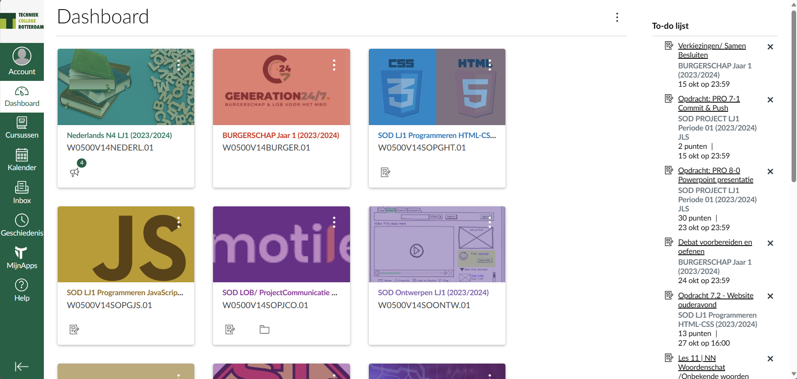

Canvas is een site waar je het hoofd material kunt vinden zoals Kalender, Dashboard, Inbox dat zijn de hoofd dingen die je kunt vinden. canvas is meer voor om je schema bij te kunnen houden van school ook voor de ouders, Dashboard is waar je alle licentie vakken kunt vinden en de opdrachten die je moet maken je kunt onder de opdracht ook het cijfer zien die je hebt behaald. Voor Kalender zie je alle datums van heel het schooljaar net een echt kalender en op de datums kun je opdrachten, huiswerk, en toetsen zien om het allemaal te kunne bij houden. Inbox is meer voor docenten die contact met je willen opnemen bijvoorbeeld als jee en toets hebt gemist en je een bericht een krijgt van de docenten .  Link naar canvas